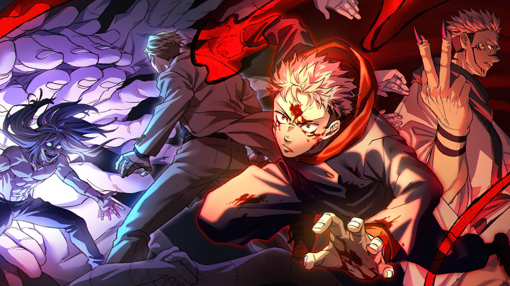

Sofrimento, arrependimento, vergonha: os sentimentos negativos dos humanos tornam-se Maldições, causando terríveis acidentes que podem levar até mesmo à morte. E pra piorar, Maldições só podem ser exorcizadas por outras Maldições. Certo dia, para salvar amigos que estavam sendo atacados por Maldições, Yuji Itadori engole o dedo do Ryomen-Sukuna, absorvendo sua Maldição. Ele então decide se matricular no Colégio Técnico de Feitiçaria de Tóquio, uma organização que combate as Maldições... e assim começa a heróica lenda do garoto que tornou-se uma Maldição para exorcizar uma Maldição.